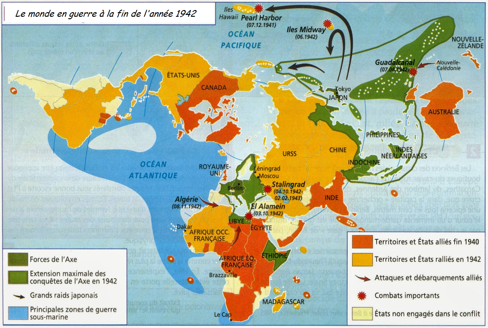
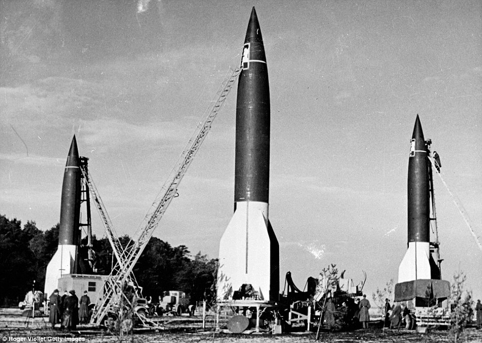
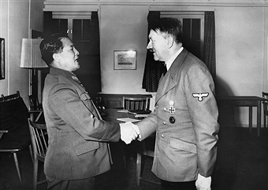

Une guerre mondiale et totale

La Seconde Guerre mondiale est la guerre la plus coûteuse qu’ait connue l’Humanité, que ce soit au niveau humain ou matériel (en particulier par rapport à sa relative courte durée). Tous les moyens possibles furent mis en œuvre pour la victoire : les populations civiles participèrent en masse à l’effort de guerre, pour la première fois les femmes avaient accès à des postes de gradés dans l’armée (autres que dans les services médicaux). Chaque pays augmenta énormément ses impôts et ses taxes, les États investirent des fortunes dans tous les moyens de propagande disponibles : affiches, films, radios etc… Chaque nation avait ses héros, chaque pays mobilisa son armée, les États-Unis à eux seuls mobilisèrent plus de 11 millions de soldats.
LES ALLIÉS
Du coté allié, la mobilisation économique fut remarquable; après juin 1940 le Royaume-Uni entra dans une économie de guerre gigantesque, en moins de 6 mois, plus de deux millions de travailleur(eu)s(es) étaient dans les usines d’armements. L’URSS exploita ses énormes ressources, autant au niveau humain que géologique (le sol soviétique regorge notamment de minerais de fer d’excellente qualité), des dizaines d’usines furent construites en Sibérie et dans l’Oural. Le 6 janvier 1942, les États-Unis lançaient leur Victory Program, celui-ci fut une réussite totale. La puissance économique américaine permit de construire 275 000 avions, 634 000 Jeep, 90 000 chars et 65 millions de tonnes de navires en l’espace de 3 ans. Ce matériel servait autant pour eux que pour leurs alliés.
L’AXE
La mobilisation allemande fut également remarquable, l’Allemagne exploita aussi les ressources des pays qu’elle avait conquis. En 1942, Albert Speer fut nommé ministre de l’Armement et de l’Économie de guerre (ministère créé pour l’occasion), l’économie allemande fut retravaillée du tout au tout. La production de guerre tripla en 2 ans, plus de 7 millions d’hommes et de femmes travaillaient dans les usines allemandes, tandis que 7 autres millions travaillaient dans le reste de l’Europe occupée au service de l’Allemagne. La conversion économique fut plus ardue pour le Japon, sa production n’augmenta que de 44 % entre 1937 et 1944 et 95 % de sa marine marchande fut coulée par la marine américaine, ce qui mina ses ressources.
LA SCIENCE

La recherche scientifique connue également un bon énorme, en particulier dans les domaines de la physique et de la mécanique. De nouveaux moyens de détection furent inventer, tels que le radar ou l’ASDIC (sonar). Le premier calculateur automatique (ordinateur) fut mis au point, les armes antichar telles que le bazooka furent développer. Les premiers avions à réaction prirent leurs envols (surtout en Allemagne) et les fusées V1 et V2 bombardèrent l’Angleterre.
L’IDÉOLOGIE

Cette guerre fut également une guerre idéologique. Hitler voulait que l’Allemagne récupère son « espace vitale » puis il mena sa « croisade contre le bolchevisme ». Les Japonais furent fanatisés grâce à des dérivés extrémistes venant du code Bushido, ceux-ci préféraient mourir que d’êtres pris.
DES PROPORTIONS INÉGALÉES
Lors de cette guerre, on vit parmi les plus grandes batailles de l’Histoire, la seule bataille de Koursk mobilisa 2 300 000 d’hommes, 30 000 canons, 6 300 chars et 4 400 avions. Cette guerre fut également celle ou l’aéronavale fit son apparition en tant que grande force, l’exemple parfait est l’attaque de Pearl Harbor ou la marine américaine fut presque entièrement décimée par une attaque aérienne minutieusement préparée. L’Allemagne fut rasée par les bombardements alliés et des machines impressionnantes telles que le B-17 firent leur apparition.